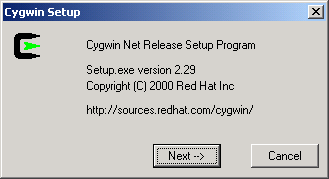
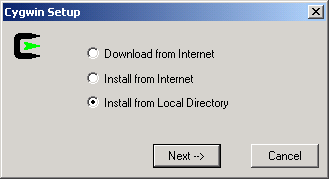
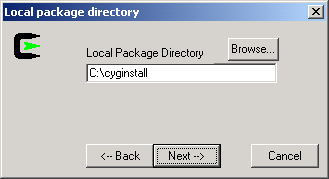
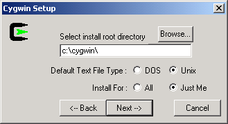
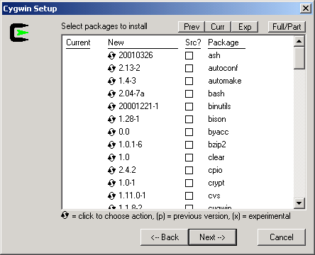
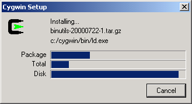
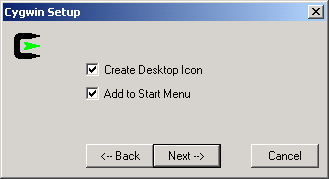
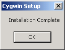

You may install the downloaded Cygwin packages on any number of the machines by simply copying your download directory to that machine, or making the download directory accessible via a network share, and following the installation steps below. The following installation steps assume that you are installing Cygwin on the same machine that you used to download the Cygwin packages.
Follow these steps to install Cygwin:
Run setup.exe from your download directory (e.g. c:\cyginstall), you will get the same welcome screen as before:

Click Next to proceed to the next screen
Choose Install from Local Directory:

Click Next to proceed to the next screen
Local Package Directory should default to the directory that you ran setup.exe from, which should also be the same directory that you previously downloaded the packages to:

Click Next to proceed to the next screen
The default Install Root is c:\cygwin; this should be fine for most installations. Leave Default Text File Type as UNIX. If you have several users on your NT machine, and you are logged in with local administrative privileges, you may wish to set Install For to All, but the default of Just Me will work fine for single user machines.

Click Next to proceed to the next screen
All downloaded packages are selected for installation by default; I do not recommend changing the list of packages to install unless you really know what you are doing:

Click Next to proceed with the installation

I highly recommend allowing Cygwin Setup to create Desktop and Start Menu icons for you; these icons simply launch a bash shell:

Click Next to finish Cygwin Setup:
